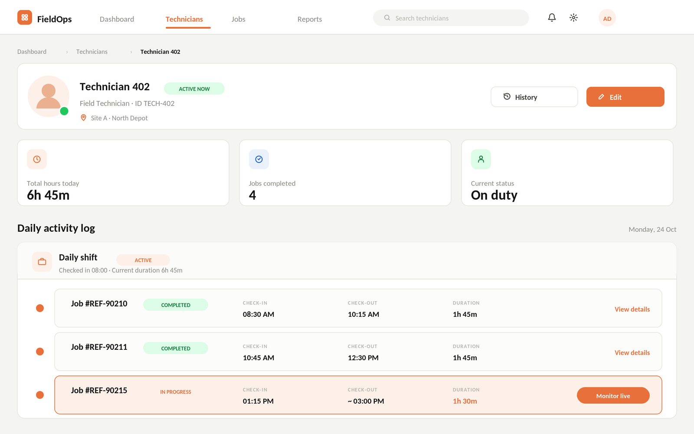
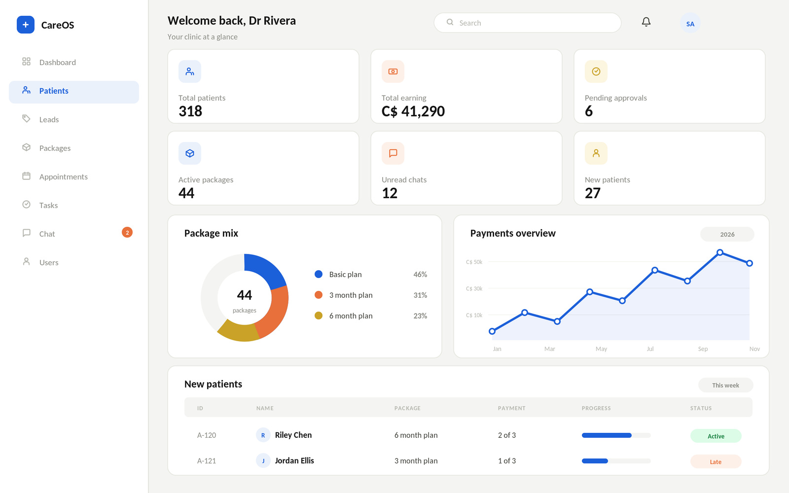
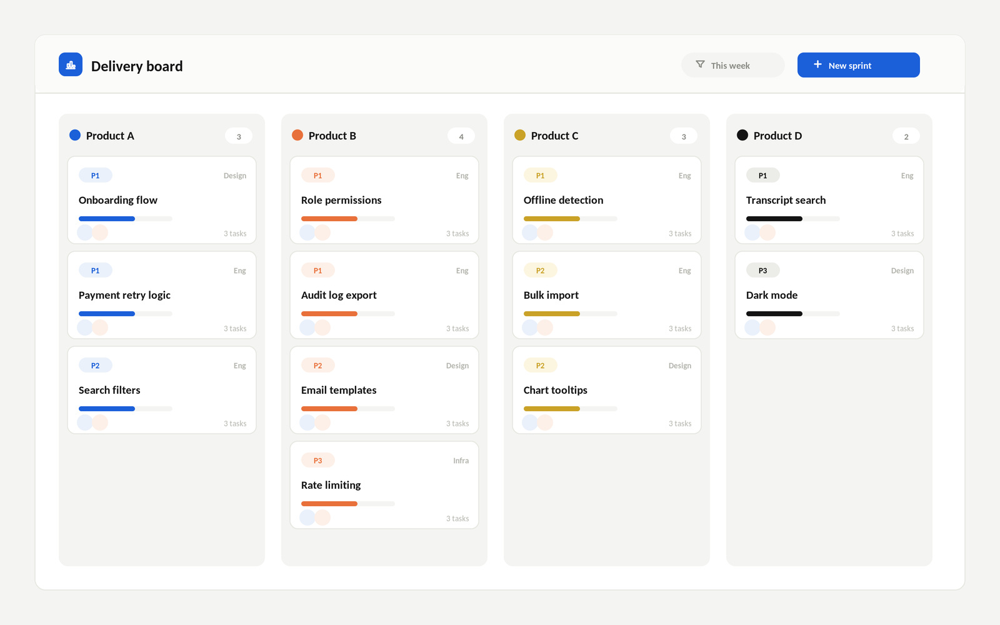
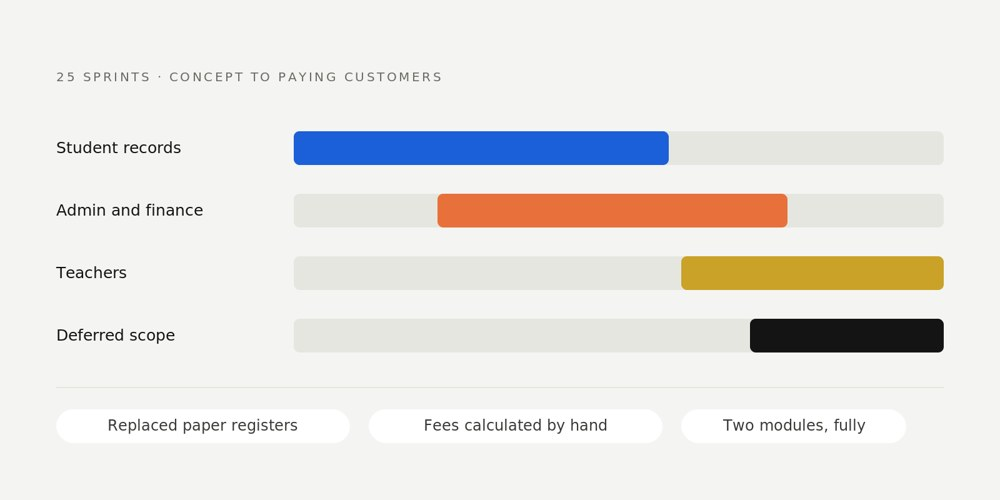
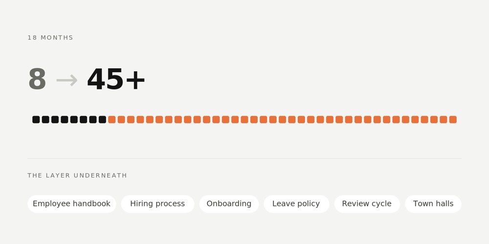

Founding Product & Project Manager
That someone is me. First product hire at a startup, first HR hire before that, and I built both functions from nothing. 8 products across 4 domains: AI operations, health tech, edtech and SaaS.
Meet Ghazala · 50 seconds, sound on
Clients don't arrive with requirements. They arrive with a problem, phrased as a frustration. Turning that into something a team can build is the job. This was a clinic that ran on paper forms and WhatsApp.
Real epics and tickets from the client's board. 32 epics, 3 milestones, 18 sprints.
Managing projects one at a time is scheduling. Managing them at once is prioritisation, deciding every week whose blocker moves first.
Five products, each with the decisions that shaped them, including the ones that cost something.

CASE 01
Field Operations Platform, commercial HVAC, Canada
An owner who couldn't be on every roof. Four client goals delivered as one product in 8 sprints.
Deep dive →

CASE 02
the health platform, digital health, Canada
A clinic on paper and WhatsApp. One owned platform across 3 milestones, cleared through app review as a regulated health product.
Deep dive →

CASE 03
Concurrent Delivery, AI & digital platforms, Malaysia
Four products, one client, running in parallel. Priorities, dependencies and stakeholders across all of them.
Deep dive →

CASE 04
School Management SaaS, school management SaaS
Schools running on paper registers. Concept to paying customers across 25 sprints, and what I learned when it was wound down.
Deep dive →

CASE 05
People Function, building the people function from zero
First HR hire during a 5x growth period. 8 to 45+ people in 18 months, and the systems that made it hold.
Deep dive →
The same five moves, whether it's a Canadian health platform or a company's first HR handbook.
SAME DAY BLOCKER ESCALATION, HOW IT ACTUALLY RUNS
09:12
Flagged by engineer
09:30
Escalated, scope frozen
11:00
Client call, limit raised
16:40
Unblocked, same day
The health platform, first sprint of Milestone 1. The clinic still runs on paper. Six real tickets, one sprint of capacity. Pick what you'd ship, then see what I shipped and why.
Milestone 1 · goal: secure access and digital onboarding · capacity 13 points
0 / 13 selected
Not a skills list. These are in the order I learned them, which is also the order they built on each other.
2022 · People operations
People first
I started with humans, not software. It shaped everything after.
2022 to 2024 · People operations
Then systems
Because doing it by hand stops working somewhere around twenty people.
2024 to 2026 · Agency delivery
Then delivery
Same instinct, pointed at software and client deadlines.
Now
And building with AI
Not managing around it. Prototyping with it, and automating my own job with it.
Throughout
The tools
Whatever the team already runs on. These are the ones I know cold.
Status reporting is the tax every project manager pays. I stopped paying it.
0 hours
given back per year, across 10+ weekly meetings
Manual logging and reporting, eliminated, along with the gap between what was said in a meeting and what got written down. Built with n8n, Zapier and Google Apps Script.
48+ sprints delivered end to end.
8 people to 45+ in 18 months at that company, and the hiring, onboarding and review systems underneath it.
"Clarity, composure, and a sharp understanding of both product and people. A remarkable learning pace, quickly grasping complex product ideas and turning them into actionable plans."
Imam Faheem
Senior Software Engineer & Architect
"Consistently demonstrated attention to detail and the ability to manage people effectively. Her communication is clear, effective, and collaborative."
Umar Jan
Operations & Project Manager
"Knows how to bring people together, gaining support from stakeholders to keep projects moving forward."
Bilal Wahab
UX/UI Designer
"Does not shy away from difficult complex challenges. Able to bring people on board and influence stakeholders to ensure goals are met."
Zeeshan Rab
Data Services Manager
Unpaid, and some of the work I'm proudest of.
Ambassador since 2023. Led a team of 8 that raised PKR 650,000 for a regional water relief project.
Disaster and humanitarian relief, 2022.
Led a team of 8 on children's welfare fundraising campaigns.